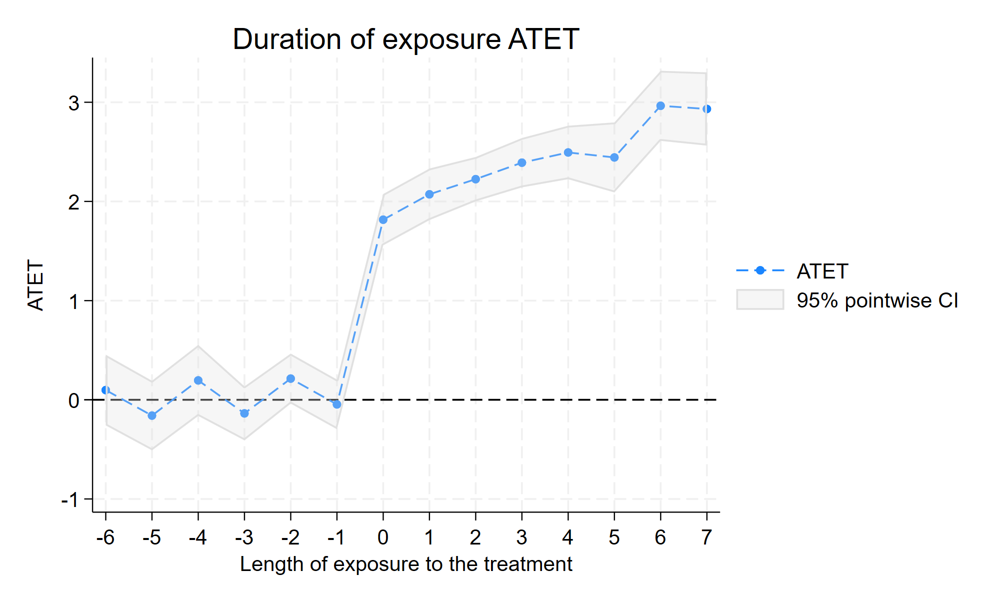
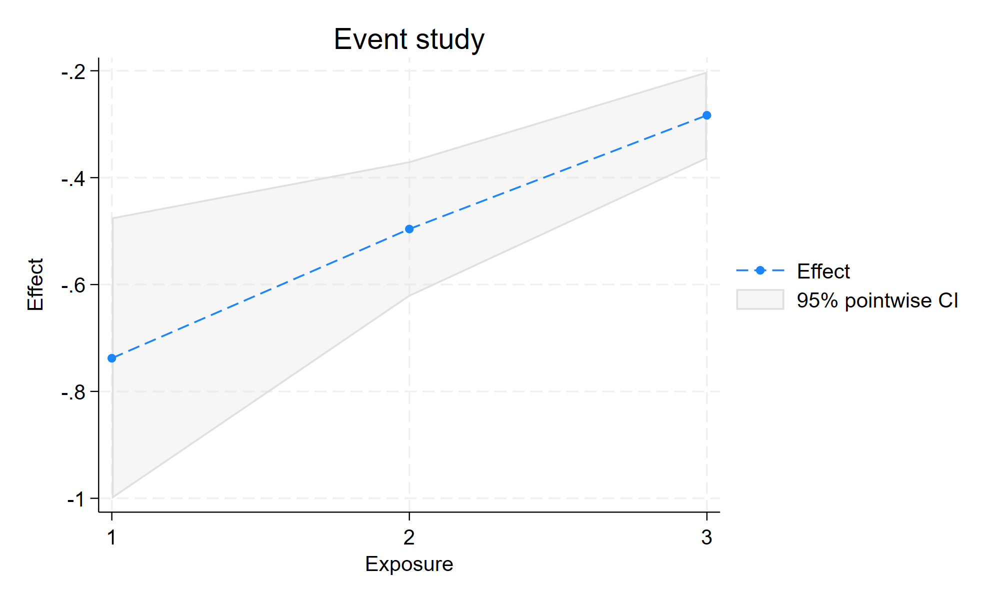
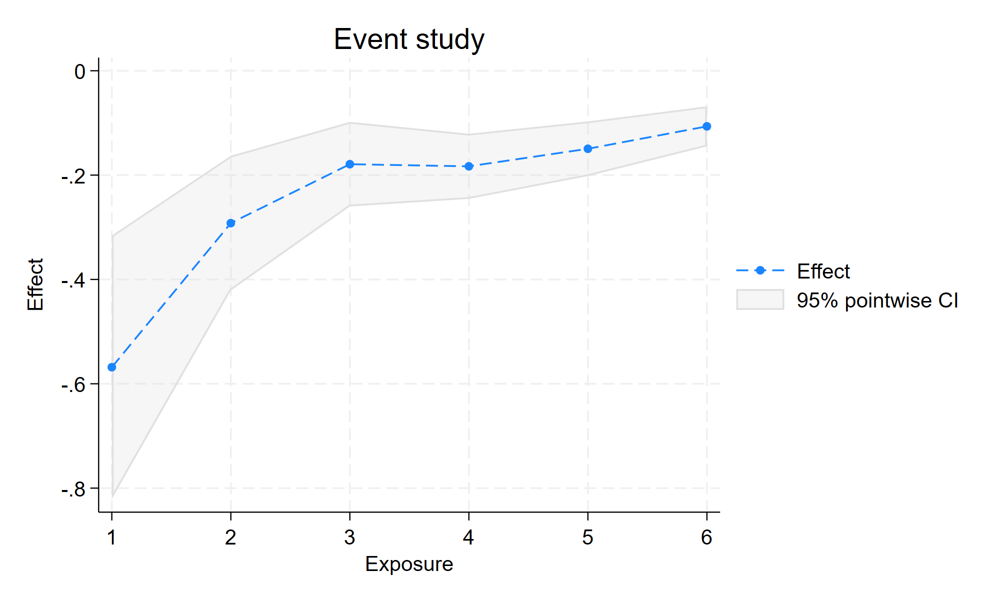
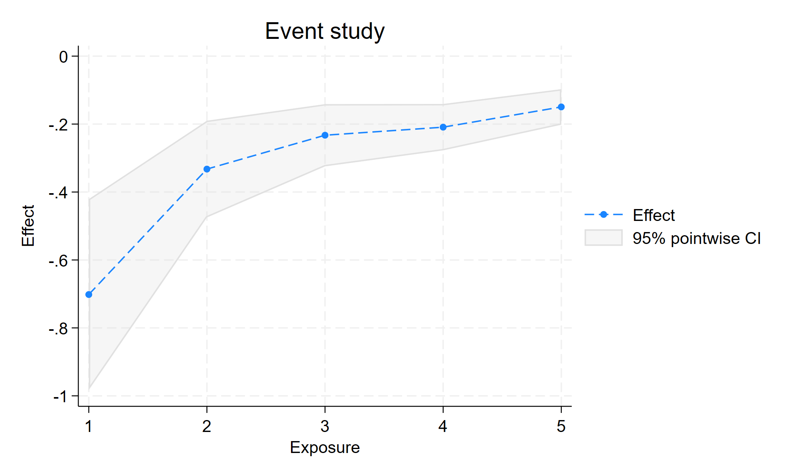
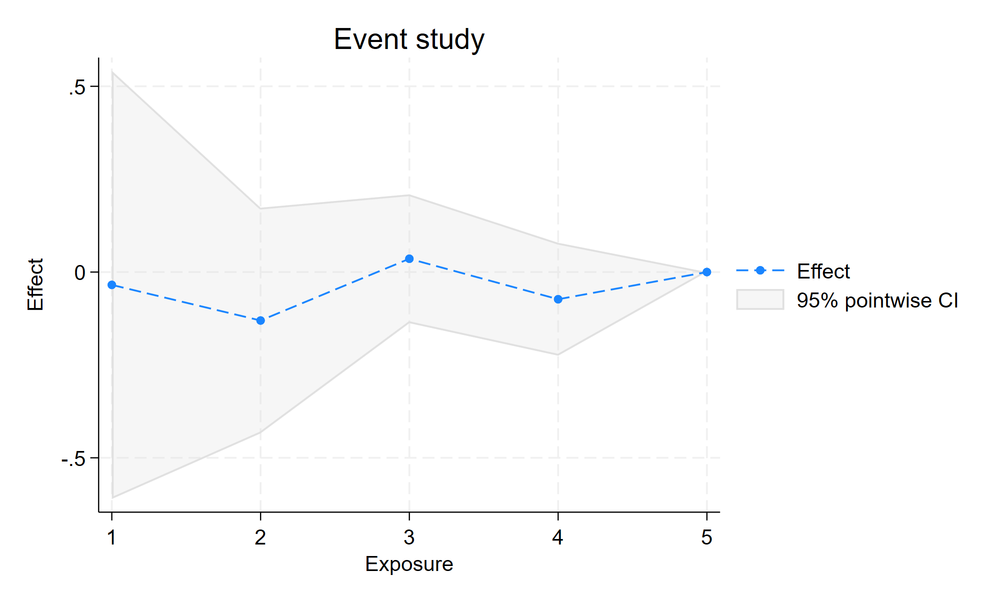
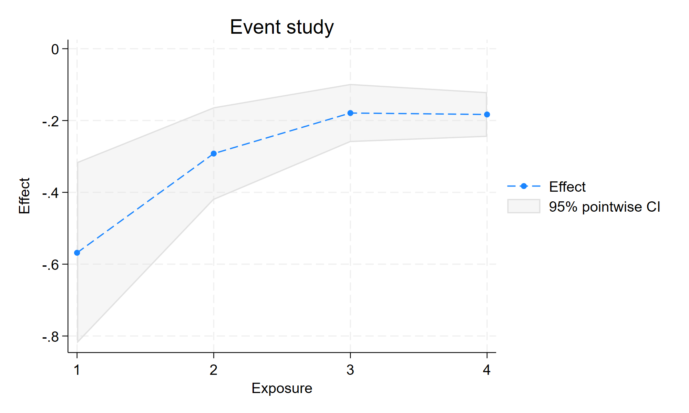
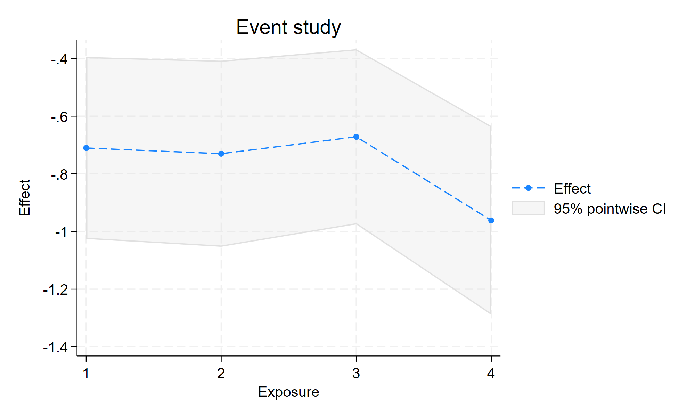

两个政策问题都用面板数据，被解释变量都叫 y。
第一个能用 xthdidregress 估，第二个用同一条命令会直接报错。
这和数据有多少没关系，差别出在处理变量本身的变化方式。
StataNow 19.5 MP（revision ≥ 2026-07-29，含 xtswitchdid）
seed 20260928 · Windows 10 · 全部数字取自 demo/logs/09_*.log
do "data/did-routing/build_did_routing.do"
do "demo/dofiles/09_xtswitchdid_vs_xthdidregress.do"
| 政策甲：给县通高速公路 | 政策乙：给县评信用等级 | |
|---|---|---|
| 取值 | 通了 / 没通（0/1） | 三档：0 / 1 / 2 |
| 会不会变回去 | 不会。路修好了不会拆，通了就一直通 | 会。可以升档，也可以掉回来 |
| 具体例子 | 甲县 2014 年通车，此后一直通 | 乙县 2012 年升到 1 档，2015 年到 2 档，2018 年撤销回 0 |
| 你想知道什么 | 通车让这个县的 GDP 涨了多少 | 每升一档，银行贷款成本降多少 |
两个问题都能用面板数据估。但能用的命令不是同一条， 差别出在乙县 2018 年那次「掉回 0」。
说明：报告用的是模拟数据，变量就叫 y 和 treat。 「通高速 / 信用等级」是教学类比，对应关系取自报告：场景 A 的处理年份是 2014 和 2017 两批， 场景 B 的 dose 是 {0,1,2}，其中有县先升到 2 档、再撤销回 0。
| 2010–2013 | 2014–2021 | |
|---|---|---|
| treat | 0 | 1 |
「通车前」= 2010–2013。只有这一个答案。
对照县从来没通车，一直停在未处理状态。 处理前后的分界只有一条，所以能直接算 ATET。
| 2010–2011 | 2012–2014 | 2015–2017 | 2018–2019 | |
|---|---|---|---|---|
| dose | 0 | 1 | 2 | 0 |
「升级前」是哪一年？2011？还是 2014？
对照也不好找：报告要求对照组在比较窗内保持同一处理水平， 但可逆数据里的县一直在变。处理前不唯一，只能按每个县走过的路径拆开看。
第 6 页和第 7 页那两种错法，都出在这一个差别上。
* 数据：data/did-routing/absorbing_staggered.dta
use "data/did-routing/absorbing_staggered.dta", clear
xtset id year
xthdidregress aipw (y) (treat), group(id)
estat aggregation, overall
estat aggregation, dynamic
| 量 | 估计 | se |
|---|---|---|
| Overall ATET | 2.334 | 0.106 |
| Exposure = 0（通车当年） | 1.816 | 0.132 |
| Exposure = 1 | 2.072 | 0.132 |
| Exposure = 2 | 2.225 | 0.114 |
| estat ptrends | χ²(9)=12.85 | p=0.170 |

estat ptrends 给出 p=0.170，没有拒绝「通车前两组趋势相同」。 没被拒绝不等于假设成立，对照是否合适还要看具体制度背景。
* 一类县 2018 才撤销（首次处理后第 7 暴露期）→ neffects(7)
use "data/did-routing/switching_multivalued.dta", clear
xtset id year
xtswitchdid (y x1) (dose), group(id) neffects(7)
estat paths, pathlen(7)
estat total
| 量 | 估计 | se |
|---|---|---|
| Exposure 1（归一化） | −0.738 | 0.134 |
| Exposure 2（归一化） | −0.496 | 0.065 |
| Exposure 3（归一化） | −0.283 | 0.042 |
| estat total | −0.864 | 0.084 |
| estat ptrends | 安慰剂未拒 | ≠已证明 |

命令的 Header 写 Absorbing = No，它自己认出这不是吸收型数据。
真值是当期每升一档约 −0.8，estat total = −0.864（窗口已含撤销段）。 Exposure 2/3 的 −0.496、−0.283 不能直接和 −0.8 比。
乙县 2018 年掉回了 0 档。如果只关心「评过级没有」，可以把它压成 0/1：
* 只要等级大于 0，就算「被处理过」
gen byte treat_bin = (dose > 0)
xthdidregress aipw (y) (treat_bin), group(id)
invalid treatment The treatment is assumed to be staggered. Once a unit is treated, it should remain treated. r(498)
乙县 2015 年是已处理，2018 年又变成未处理。 命令据此判断数据违反了「一旦处理就永久处理」这个前提，于是拒绝往下估。
它没有硬算出结果，而是直接停下。这样你会马上发现命令选错了。
要换的是命令族，改选项没用。 xtdidregress / xthdidregress 这一族按设计就不支持可逆路径， 加 if 或 option 都无济于事。 可逆数据要用 xtswitchdid，见第 5 页。
乙县升过级又掉回 0。那我干脆标记「这个县曾经被处理过」， 首次处理后整段时间线都算处理组：
* treat_abs = 截至当期曾 dose>0 → 首次处理后永久置 1（掩盖撤销） * bysort id (year): gen treat_abs = sum(dose>0) > 0 xthdidregress aipw (y) (treat_abs), group(id) estat aggregation, overall
| 返回码 | _rc = 0 正常结束，没有任何警告 |
| Overall ATET | ≈ −1.013 |
| 首次处理前误标 1 | 0（不是偷看未来） |
| 撤销后仍标 1 | 352 |
treat_abs 是「截至当期曾经处理过」：首次处理之前不会被标 1，这份数据里误标 0 个观测。 错在后面：乙县 2018 年已经掉回 0，变量却还是 1，撤销和剂量升降都被抹掉了。 估出来的 −1.013 不是当期每单位 dose 的效应。
第 6 页的命令报错，你会立刻去改。
这一页的命令不报错，如果不去核对变量的实际含义，很容易把 −1.013 直接写进论文。
判断命令有没有选对，不能只看它是否报错。
| 路径 | 县数 | 占比 |
|---|---|---|
| 0 1 1 1 1 1 1 1 | 43 | 34.96 |
| 0 1 1 1 2 2 2 0 | 44 | 35.77 |
| 0 2 2 2 2 2 2 2 | 22 | 17.89 |
| 其他（升档未撤等） | 14 | 11.38 |
序列长度由 pathlen(7) 决定，对应首次处理后第 7 个暴露期才出现的那次撤销。
中间那行以 0 收尾：这一类县 2012 年升到 1 档，2015 年到 2 档，2018 年撤销回 0。 它先升级、再撤销，两种变化都发生过。
neffects(3) 和默认的短 pathlen 都截不到这条路径。 吸收型框架里只有「通了没有」两种状态，写不进去这种撤销。这就是必须用 xtswitchdid、并且把窗口拉长到盖住撤销期的原因。
xtswitchdid (y) (treat), group(id) neffects(4) estat total // ≈ 2.150 xtswitchdid (y) (treat), group(id) neffects(8) estat total // ≈ 2.349 ≈ AIPW 2.334
| Header | Absorbing = Yes 命令自己认出来了 |
| 报告的量 | normalized exposure effects 不是 AIPW 的 ATET 表 |
| 短窗 vs 长窗 | 2.150 → 2.349：差额主要来自暴露期截断 |
不完全是。量的是两个不同的目标参数。 短窗 2.150 和 AIPW 2.334 的差距里，有一部分来自 neffects 截断，不全是定义差异。 窗口拉到 8 期后 total≈2.349，已经和 AIPW 很接近，但两个量各自的定义仍然要写清楚。
写论文时，主表如果声称的是 ATET 或事件研究聚合， 就用 xthdidregress aipw。 xtswitchdid 可以放在稳健性部分，但表头要写清报的是 normalized exposure 还是 ATET，以及 neffects 取了多少。
命令能跑通、数字又接近，都不能说明识别是对的。 第 7 页和这一页的两种错法成因不同，但都属于「看起来正常、实际估错了对象」。
处理形态只决定候选命令。目标参数、同初始水平的对照、平行趋势与无预期，都要能辩护。 estat ptrends 没有拒绝，不等于假设成立。
证据：demo/logs/09_xtswitchdid_vs_xthdidregress.log
上一课解决的是「用 xthdidregress 还是 xtswitchdid」。
这一课假设你已经选对了，问题变成：手册里那些选项，各自在回答什么实证问题。
seed 20260929 · 真值：每单位 dose ≈ −0.7
280 县 × 16 年，嵌在 28 个省里；2020 年 y 故意全缺，用来讲非平衡面板。
do "data/did-routing/build_switching_features.do"
do "demo/dofiles/10_xtswitchdid_features.do"
| typ | 故事（课堂上可以这样说） |
|---|---|
| 0 | 一直 0 档，干净对照 |
| 1 | 0→1→2，升上去不回头 |
| 2 | 0→2，后来又撤回 0 |
| 3 | 样本开始就是 1 档，再升到 2 |
| 4 | 一直停在 1，给 typ3 当对照 |
| 5 | 样本开始就是 2 档，再往下降 |
| 6 | 一直停在 2，给 typ5 当对照 |
板书：xtswitchdid 只在同一初始档的组之间比。 所以 typ3 跟 typ4 比、typ5 跟 typ6 比，不是跟「从未有过任何政策」的县乱比。
传统 ATET 命令不够用的地方在这里：处理不是开 / 关两态，而是三档，而且能来回改。
xtset id year xtswitchdid (y x1) (dose), group(id) neffects(6) estat ptrends estat total estat eventplot
| 量 | 估计 | 课堂上怎么说 |
|---|---|---|
| Exposure 1（归一化） | −0.57 | 刚偏离初始档、累计增量约 1 档，接近真值 −0.7 |
| estat total | −0.58 | 汇报「每单位剂量」优先看这个 |
| estat ptrends | p=0.23 | 未拒绝安慰剂联合检验；未拒不等于已证明 |

必讲：后面 Exposure 2、3… 数字变小，主要是归一化分母变大， 不能说成「政策效果一年比一年差」。要讲「每单位」，看 estat total。
答：不必砍成「从零起步」。手册写明 groups need not be first observed at 0。
keep if inlist(typ, 3, 4) // 初始都是 1 档 xtswitchdid (y x1) (dose), group(id) neffects(4) estat total // −0.73
课堂上的对比句：我们问的不是「有没有政策」， 而是「相对继续停在 1 档，升到 2 档差多少」。
* 只要首次切换是向上 xtswitchdid (y x1) (dose), group(id) neffects(5) switchgroup(in) estat total // −0.69 * 只要首次切换是向下 xtswitchdid (y x1) (dose), group(id) neffects(5) switchgroup(out) estat total // −0.12（se 大）
理论一句（可板书）：命令聚合时假定「升一档」与「降一档」效应符号相反、再平均； 所以分开估 in / out 往往更干净。


正好教学生：选项打开了不等于效力够。 先看 Header 里 Switch out 的组数，再决定这个数字能不能报。
默认对照池里，既有「永远不改档」的县，也有「以后才会改、眼下还没改」的县（not-yet）。 想更干净时可以限定只跟前者比。
xtswitchdid (y x1) (dose), group(id) neffects(5) controlgroup(never)
estat total // −0.60
课堂上的取舍：never 更干净， 但对照变少、标准误常变大。写论文时先说清你用的是哪一种对照池。
quietly xtswitchdid (y x1) (dose), group(id) neffects(6)
estat paths, pathlen(6) generate(featpath)
xtswitchdid (y x1) (dose), group(id) path(featpath1) neffects(5)
estat total // 路径 0 1 1 1 2 2 → −0.71
教法建议：先投 estat paths 频数表， 让学生指一条「够厚」的路径，再 path()。
路径太碎会没观测，path() 会失败或 se 爆炸。 这是数据限制，不是命令坏了。
县域政策，拿外省当对照合理吗？想强制「只跟本省、同初始档的县比」：
xtswitchdid (y x1) (dose), group(id) supergroup(province) neffects(5)
estat total // −0.56
group(id) 是处理发生的层； supergroup(province) 是比较不许跨出的围栏。
表里 Exposure 系数越往后越小，是效应在消，还是分母在变？
xtswitchdid (y x1) (dose), group(id) neffects(4) // 默认 normalized xtswitchdid (y x1) (dose), group(id) neffects(4) raw // 未归一化
两种设定下 estat total 都是 −0.59， 每单位汇总不变；变的是暴露期那一列的表头与数值含义。


口令：主文报告 normalized + estat total，附录可以给 raw。 别把后期的归一化系数直接拿去对照 DGP 的「当期 −0.7」。
短暴露期用了 200 个 switcher，长暴露期只剩 40 个。曲线的弯折是效应，还是构成漂移？
xtswitchdid (y x1) (dose), group(id) neffects(5) commonswitchers
estat total // −0.60
事件研究图要「同一群人走完全程」，才好谈动态；否则先说明构成漂移。
CFPS、县域年鉴经常隔年，疫情年整列缺失，就不能做面板 DID 了吗？
非平衡：本数据 2020 年 y 全缺，F1 照样估得出 （log 里 N=4200 < 4480）。
keep if mod(year, 2)==0
xtset id year, delta(2)
xtswitchdid (y x1) (dose), group(id) neffects(4)
estat total // −0.57
板书：时间步长写进 xtset, delta(#)， 不要假装每年都有观测。
| 你想回答的问题 | 拧哪个开关 | 本课 total |
|---|---|---|
| 多值可切换的平均每单位效应 | 基线 xtswitchdid | −0.58 |
| 历来就不在 0 档 | 限制同初始档子样本 | −0.73 |
| 只要加码 / 只要松绑 | switchgroup(in|out) | −0.69 / −0.12 |
| 对照只要永不切换 | controlgroup(never) | −0.60 |
| 某一条具体路径 | estat paths + path() | −0.71 |
| 只在省内比 | supergroup() | −0.56 |
| 系数别被剂量归一化「看矮」 | 对照看 raw；汇报仍靠 total | −0.59 |
| 动态图要同批人 | commonswitchers | −0.60 |
| 隔年 / 缺年 | delta() | −0.57 |